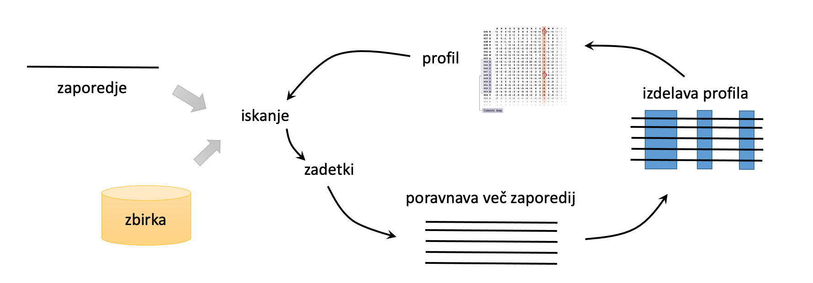

Predloga#
V naslovu besedo “Predloga” zamenjajte s kratkim naslovom vašega seminarja – do 4 kratke besede, najbolje, da vsebuje kar naslov programa in eno ali dve ključni besedi. Tole besedilo seveda izbrišite.
Avtorja: Ime in Priimek, Ime in Priimek
Datum predstavitve: datum v formatu YYYY-MM-DD
Namen vaje#
Tukaj v dveh do treh povedih navedite, kaj je bistvo vaje oz. kaj je tisto, kar se bodo vaši kolegi ob izvajanju naučili.
Program#
Program: ime in verzija programa, kot povezava
Avtorji programa: navedite avtorje programa ter institucijo, s katere prihajajo (pri insitutuciji navedite tudi spletno povezavo)
Reference:
v obliki seznama navedite eno ali več referenc, povezanih s programom - gre za referenco/reference, običajno navedene na na spletni strani programa v kategoriji “Cite” ali kaj podobonega, torej gre za članke, ki opisujejo nastanek in delovanje programa ter bi se naj uporabljali pri citiranju v znanstveni literaturi, kjer se je ta program uporabljal
reference oblikujte po zgledu spodaj
Manalastas-Cantos, K.; Konarev, P.V.; Hajizadeh, N.R.; Kikhney, A.G.; Petoukhov, M.V.; Molodenskiy, D.S.; Panjkovich, A.; Mertens, H.D.T.; Gruzinov, A.; Borges, C.; et al. (2021) ATSAS 3.0: Expanded Functionality and New Tools for Small-Angle Scattering Data Analysis. Journal of Applied Crystallograpy 54, 343–355. 10.1107/S1600576720013412
Opis programa#
Tukaj v enem ali več odstavkih opišite, kako program deluje, algoritem ipd. Te podatke najtede bodisi na spletni strani bodisi v članku, ki je naveden pri programu kot referenca.
Navedite tudi, za katere vhodne podatke je program primeren in za katere manj (npr. nekateri programi delujejo dobro na nukleotidnih zaporedjih vretenčarjev).
Uporabite lahko tudi kakšno sliko, npr. zaslonsko sliko, lahko tudi sami kaj narišete. Slika naj bo s formatu png ali jpg, pospremite pa jo z besedilom, po zgledu spodaj. Pazite, da imate pravico do uporabe slike - preverite, ali jih lahko uporabite iz članka, ob tem pa morate obvezno upoštevati navodila založnika glede citiranja. Najbolje je, da sami narišete shemo (npr. v Powerpointu) in jo shranite kot png ali jpg.
PSI-BLAST najprej poišče zaporedja iz izbrane zirke, ki so podobna iskalnemu zaporedju (query sequence), nato pa iz njih izračuna poravnavo več zaporedij oz. identificira, katera mesta v zaporedju so bolj ohranjena in katera manj. Na osnovi tega izdela pozicijsko uteženo matriko (profil), ki ga nato uporabi za izračun vrednosti poravnav pri ponovljenem iskanju po zbirki, kar je prikazano na spodnji shemi: 
Vhodni podatki#
Navedite, kaj so vhodni podatki za program in v kakšni obliki morajo biti.